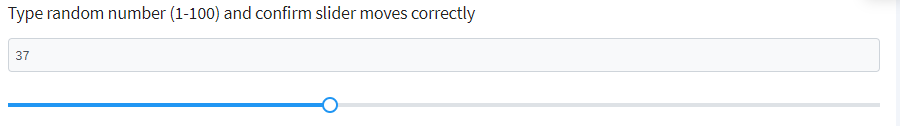

1、webDriver初始化
driver = webdriver.Chrome()
2、页面导航
driver.get('http://localhost/ecshop/user.php?act=register')
3、查找元素
driver.find_element(By.ID, 'username')
4、与元素的交互
driver.find_element(By.NAME, 'email').send_keys('123456@163.com') # 输入文本函数
driver.find_element(By.XPATH, '//input[@name="Submit"]') # 点击函数
5、下拉框的处理
from selenium import webdriver
from selenium.webdriver.common.by import By
from selenium.webdriver.support.ui import Select
sel = Select(driver.find_element(By.NAME, 'sel_question'))
sel.select_by_index(3) # 通过下拉选项的索引去获取
sel.select_by_value('favorite_movie') # 通过下拉选项标签的value值定位
sel.select_by_visible_text('我最大的爱好？') # 通过下拉选项的标签的文本内容定位
sel.deselect_by_index(2) # 当下拉选项多选的情况下，通过索引取消选择
sel.deselect_by_value('favorite_movie') # 通过标签的value值取消选择
sel.deselect_by_visible_text('我最大的爱好？') # 通过标签文本取消选择
sel.deselect_all() # 取消全部下拉选项
6、警告框的处理
alert = driver.switch_to.alert
sleep(3)
alert.accept()
7、单选按钮的处理
driver.find_element(By.XPATH, '//*[@id="j_idt87:console1"]/tbody/tr/td[4]/label').click()
8、滑动条拖动的处理

from selenium.webdriver.common.action_chains import ActionChains
# 定位到进度条的滑块元素
slider = driver.find_element(By.ID, 'j_idt106:j_idt120')
# 获取滑块元素的大小
slider_width = slider.size['width']
# 计算要拖动的偏移量（比如说，要拖动到一半的位置）
offset = slider_width / 8
# 使用ActionChains进行拖动操作
action = ActionChains(driver)
# click_and_hold：点击并保持住滑块元素，准备拖动；move_by_offset：通过指定的偏移量来移动滑块；
# release：释放鼠标，完成拖动操作；perform：执行以上定义的动作链
action.click_and_hold(slider).move_by_offset(offset, 0).release().perform()
9、文本框数值自增或自减的处理

from selenium.webdriver.common.keys import Keys
number_input = driver.find_element(By.ID, 'j_idt106:j_idt118_input')
# 清空输入框
number_input.clear()
# 手动输入新的值
number_input.send_keys("10")
# 使用文本框上的向上箭头模拟值自增
number_input.send_keys(Keys.ARROW_UP)
sleep(2)
# 使用文本框上的向下箭头模拟值自减
number_input.send_keys(Keys.ARROW_DOWN)
10、文本框弹出日期选择的处理
# 定位到文本框
date_input = driver.find_element(By.ID, 'j_idt106:j_idt116_input')
# 触发文本框的点击事件，弹出日期选择框
date_input.click()
# 定位到弹出的日期选择框里面的元素
date_element = driver.find_element(By.XPATH, '//*[@id="j_idt106:j_idt116_panel"]/div/div[2]/table/tbody/tr[5]/td[7]/a')
date_element.click()
11、窗口最大化
driver.maximize_window()
12、页面截图
driver.save_screenshot('scr.png')
13、模拟键盘和鼠标的一系列操作
1）模拟键盘按键
from selenium.webdriver.common.action_chains import ActionChains
from selenium.webdriver.common.keys import Keys
# 定位到多行文本框
lines_element = driver.find_element(By.ID,'j_idt88:j_idt101')
lines_element.send_keys('多行文本框第一行')
# 模拟键盘回车键
ActionChains(driver).send_keys(Keys.ENTER).perform()
lines_element.send_keys('第二行文字')
2）模拟鼠标的相关操作
from selenium.webdriver.common.action_chains import ActionChains
from selenium.webdriver.common.keys import Keys
# 1）点击
driver.find_element(By.ID, 'j_idt88:j_idt101').click()
# 2）右键点击，context_click
ele = driver.find_element(By.ID, 'j_idt88:j_idt101')
ActionChains(driver).context_click(ele).perform()
# 3）双击，double_click
double_ele = driver.find_element(By.ID, 'j_idt88:j_idt91')
ActionChains(driver).double_click(double_ele).perform()
# 4）鼠标悬停，move_to_element
move_element = driver.find_element(By.XPATH, '//*[@id="menuform:j_idt40"]/a')
ActionChains(driver).move_to_element(move_element).perform()
# 5）拖拽操作，drag_and_drop
source = driver.find_element(By.ID, 'source')
target = driver.find_element(By.ID, 'target')
ActionChains(driver).drag_and_drop(source, target).perform()
# 6）鼠标滚动
# 使用JavaScript来执行向下滚动到页面底部
driver.execute_script("window.scrollTo(0,document.body.scrollHeight);")
# 下拉菜单有多个选项，模拟鼠标滚动到最底部那个，并点击选择
dropdown = driver.find_element(By.ID, 'j_idt87:lang_label')
dropdown.click()
# 模拟鼠标滚轮向下滚动
for _ in range(8):
ActionChains(driver).send_keys(Keys.DOWN).perform()